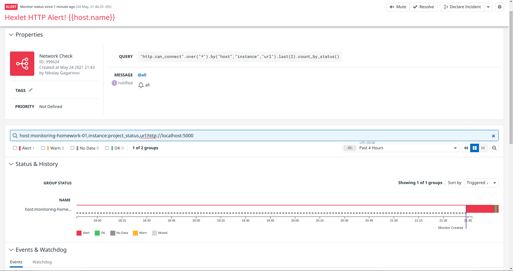
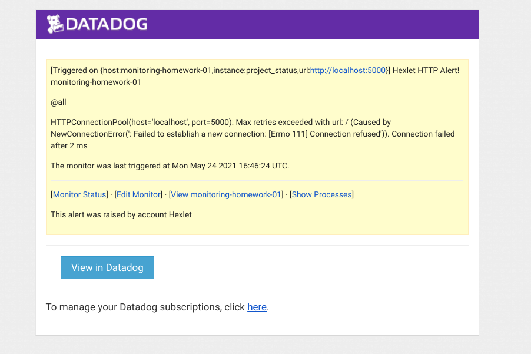

Мониторинг
В этой домашней работе мы подключим Datadog к серверам Digital Ocean и настроим монитор, который будет проверять доступность нашего приложения, и, в случае отклонения от нормы, посылать уведомление об этом по электронной почте.
В качестве проверки состояния приложения мы будем использовать http_check от Datadog. Агент будет проверять, что наше приложение запущено на 5000 порту, а сама проверка конфигурируется с помощью переменных Ansible.
Ссылки
Задачи
- Зарегистрируйтесь на datadoghq.com
- На шаге 3. Agent Setup. Выберите Ansible в качестве способа установки. (В дальнейшем сгенерировать новые ключи можно на странице Integrations — Apis
hosts
Добавьте в файл hosts два сервера, на которых будет запущено приложение.
requirements.yml
Добавьте роль Datadog в requirements.yml и выполните make setup. Добавьте в файл vault-password секретный пароль для шифрования переменных
group_vars/webservers/vault.yml
Добавьте в файл ключ апи Datadog и зашифруйте файл
make encrypt-vault FILE=group_vars/webservers/vault.yml 2 ↵
ansible-vault encrypt group_vars/webservers/vault.yml --vault-password-file vault-password
Encryption successful
playbook.yml
Добавьте блок (play), использующий роль Datadog для установки и запуска агента. Запустить роль можно добавив роль или с помощью модуля ansible.builtin.include_role. Выполните деплой (make deploy)
Если агент настроен правильно, то через 2-3 минуты информация будет отправлена в Datadog.
Создание монитора в Datadog
- Создайте новый монитор в разделе Network. Выберите созданный http_check, далее вам необходимо выбрать все хосты, сколько проверок требуется для оповещения и восстановления
- В сообщении оповещения сделайте заголовок Hexlet HTTP Alert! <host_name>, где host_name - это переменная, которая будет подставляться из переменных Datadog
- Добавьте себя в оповещение. Проверьте, что оповещение настроено корректно, отправьте тестовое сообщение с помощью соответствующей кнопки
- Зайдите на один из серверов и остановите контейнер приложения. Если все было настроено правильно, то придёт оповещение от Datadog о недоступности сервиса
- В файле solution добавьте ссылку на задеплоенное приложение: http://<адрес>
После выполнения домашней работы приложите скриншоты в директории screenshots:
- Запущенный монитор HTTP

- Сработавший алерт монитора

- Тело письма оповещения

Дополнительное задание
Настройте дашборд и выведите текущие метрики сервера.